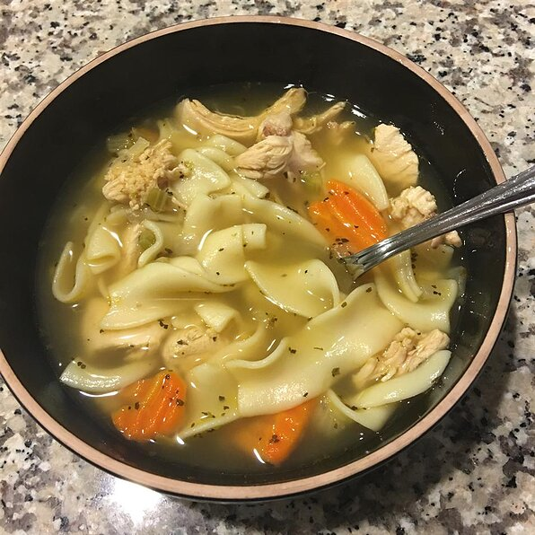

Chicken Noodle Soup

Quick and Easy Chicken Noodle Soup: When you don't have time to make your soup totally from scratch, this is a very easy, very good substitute.
Ingredients:
- 1 tablespoon butter
- ½ cup chopped onion
- ½ cup chopped celery
-
4 (14.5 ounce) cans chicken broth
-
1 (14.5 ounce) can vegetable broth
-
½ pound chopped cooked chicken breast
-
1 ½ cups egg noodles
-
1 cup sliced carrots
-
½ teaspoon dried basil
-
½ teaspoon dried oregano
-
salt and pepper to taste
Directions:
-
In a large pot over medium heat, melt butter. Cook onion and celery in butter until just tender, 5 minutes. Pour in chicken and vegetable broths and stir in chicken, noodles, carrots, basil, oregano, salt and pepper. Bring to a boil, then reduce heat and simmer 20 minutes before serving.
-
other stuff, here's the link: Chicken Noodle Soup: All recipes